Readings are transcriptions only; what a value means is decided in the rows. An approval pins the reading and its evidence; any later change makes it pending again.
VOL-II-p3-r1: VOL-II page 3 — reading approved
Approved by Ahmad on 2026-10-03 for review subject 6bc6505956429dc7 (this reading and its evidence, exactly as shown here). No decision is needed unless the reading changes: any change makes it pending again, and tenderpack approve then shows the differences before an approval can be extended. The approval covers the transcription only.
Confirmation record:
worklog/2026-10-03_session-08_prompt.md, section 2 ('Record my source-reading confirmations'): the owner's written confirmation of 3 Oct 2026, received about 19:30 UTC; recorded by the assistant (Claude Code) on that instruction. The confirmation was made on the reading as shown in the session 07 review packets (reading file unchanged since commit 1997ef8)
Confirms:
Confirms the visible Table 2-4 transcription: rows, headings, units, limits, assessment bases and the visible note (Note 1). TN = 5 mg/l is the original reading; 3 mg/l is the separate amended value (ADD-02 5.1).
Settled by the reviewer:
the printed qualifier is confirmed as read: '(all values are maxima; compliance assessed as a 30-day rolling average unless stated)'
the limits are confirmed as read, including Faecal Coliforms 2.2 MPN/100 ml (the decimal-point question in the reading is settled by this confirmation of the visible limits)
Left open:
how the 'all values are maxima' qualifier interacts with the Residual Chlorine (0.5 - 1.0 mg/l) and pH (6.0 - 9.0) ranges is unresolved
each parameter keeps its own printed basis of assessment (30-day rolling average, maximum instantaneous, maximum any single sample, continuous at outlet); the qualifier's default applies only 'unless stated'
anything outside the visible image stays uncertain (e.g. whether a further note was cut off below Note 1)
register, not part of the reading: VOL-V 29.3's first-12-month availability-deduction exception for rolling-average parameters is retained; it is not an exemption from technical compliance or commissioning requirements
Does not cover:
changed or unseen content: any later change to the reading, its uncertainties or its evidence makes it pending again; differences are shown before any approval is extended
the register's interpretations of this content (A1 rows stay proposed until decided row by row)
confirmed: the location of the precedence language only: it is in the VOL-II p3 reproduction preamble (text layer, unit VOL-II:T2-4-heading/para1, printed above the image, so outside this reading): 'In the event of any discrepancy between this reproduction and the Environmental Permit, the Environmental Permit shall prevail.'
not confirmed: the contents of the Environmental Permit, which is not in the pack; compliance with the Environmental Permit, which is not claimed, including after the TN amendment (ADD-02 5.1)
Record amended:
3 Oct 2026, by the assistant, from the owner's follow-up message (worklog/2026-10-03_session-08_prompt.md, follow-up): the permit wording was split into what the owner's confirmation covers (the location of the precedence language) and what it does not (the Permit's contents, Permit compliance). Reviewer, date and review subject unchanged.
Points the reading itself records as uncertain (kept as recorded):
The table is a scan with speckle and a measured skew of about -0.34 degrees; values were read at native resolution.
Table 2-4 is stated to be reproduced from an Environmental Permit that is not in the pack; this reading says what the image shows, nothing about the Permit.
`note1`: Note 1 is the last line of the image and touches its bottom edge; the image may be cropped. The page continues with 'End of reproduction.' in the text layer, but whether a further note was cut off cannot be established from the pack.
row `FaecalColiforms`: decimal point in 2.2: clear at native resolution, but a speckled scan can imitate a point; reviewer to confirm — settled by Ahmad 2026-10-03: the limits are confirmed as read, including Faecal Coliforms 2.2 MPN/100 ml (the decimal-point question in the reading is settled by this confirmation of the visible limits)
row `ResidualChlorine`: printed as a range although the qualifier says 'all values are maxima'; whether 0.5 is a binding minimum is an interpretation for a person, not a reading question
row `pH`: unit cell shows a dash, read as 'no unit'
row `pH`: range printed under a 'maxima' qualifier (see Residual Chlorine)
Full packet for VOL-II-p3-r1: every band, cell and numeral at native resolution beside its reading (Arabic shown right to left); the crops below are the same regions, one per unit. Scroll sideways in the packet: crops are kept at native size so diacritics and decimal points stay visible.
VOL-II:T2-4
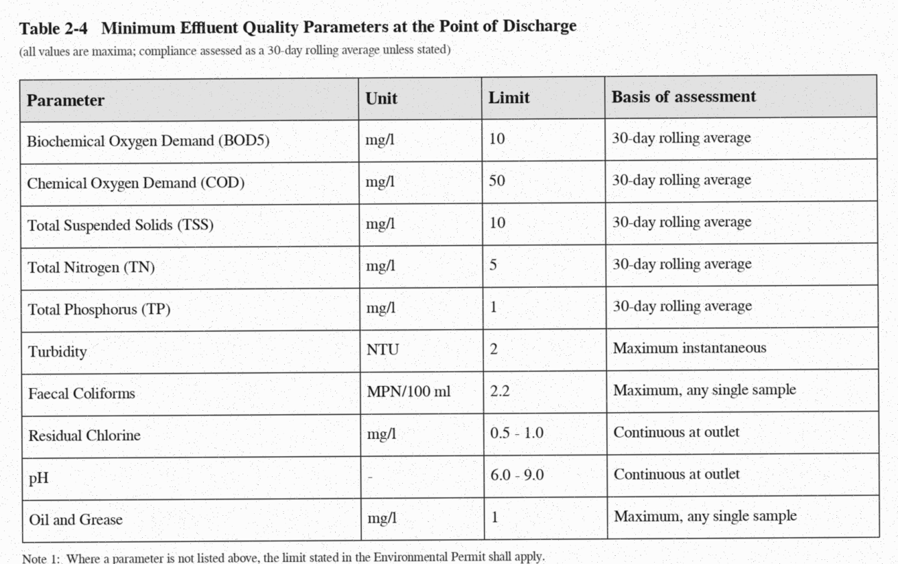
VOL-II:T2-4 (page 3)
Table 2-4 Minimum Effluent Quality Parameters at the Point of Discharge (all values are maxima; compliance assessed as a 30-day rolling average unless stated)
VOL-II:T2-4/BOD5
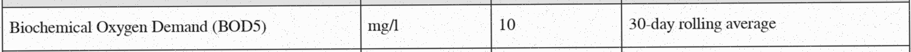
VOL-II:T2-4/BOD5 (page 3)
Parameter
Biochemical Oxygen Demand (BOD5)
Unit
mg/l
Limit
10
Basis of assessment
30-day rolling average
VOL-II:T2-4/COD
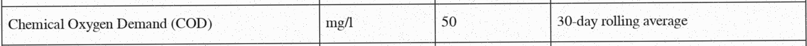
VOL-II:T2-4/COD (page 3)
Parameter
Chemical Oxygen Demand (COD)
Unit
mg/l
Limit
50
Basis of assessment
30-day rolling average
VOL-II:T2-4/TSS
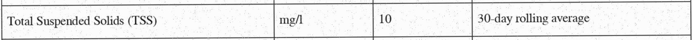
VOL-II:T2-4/TSS (page 3)
Parameter
Total Suspended Solids (TSS)
Unit
mg/l
Limit
10
Basis of assessment
30-day rolling average
VOL-II:T2-4/TN
VOL-II:T2-4/TN (page 3)
Parameter
Total Nitrogen (TN)
Unit
mg/l
Limit
5
Basis of assessment
30-day rolling average
VOL-II:T2-4/TP
VOL-II:T2-4/TP (page 3)
Parameter
Total Phosphorus (TP)
Unit
mg/l
Limit
1
Basis of assessment
30-day rolling average
VOL-II:T2-4/Turbidity
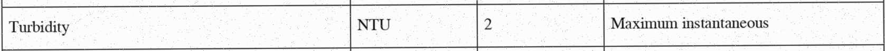
VOL-II:T2-4/Turbidity (page 3)
Parameter
Turbidity
Unit
NTU
Limit
2
Basis of assessment
Maximum instantaneous
VOL-II:T2-4/FaecalColiforms
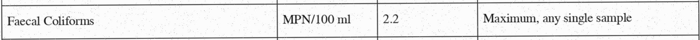
VOL-II:T2-4/FaecalColiforms (page 3)
Parameter
Faecal Coliforms
Unit
MPN/100 ml
Limit
2.2
Basis of assessment
Maximum, any single sample
decimal point in 2.2: clear at native resolution, but a speckled scan can imitate a point; reviewer to confirm — settled by Ahmad 2026-10-03: the limits are confirmed as read, including Faecal Coliforms 2.2 MPN/100 ml (the decimal-point question in the reading is settled by this confirmation of the visible limits)
VOL-II:T2-4/ResidualChlorine
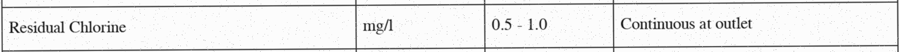
VOL-II:T2-4/ResidualChlorine (page 3)
Parameter
Residual Chlorine
Unit
mg/l
Limit
0.5 - 1.0
Basis of assessment
Continuous at outlet
printed as a range although the qualifier says 'all values are maxima'; whether 0.5 is a binding minimum is an interpretation for a person, not a reading question
VOL-II:T2-4/pH
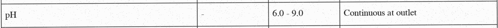
VOL-II:T2-4/pH (page 3)
Parameter
pH
Unit
-
Limit
6.0 - 9.0
Basis of assessment
Continuous at outlet
unit cell shows a dash, read as 'no unit'
range printed under a 'maxima' qualifier (see Residual Chlorine)
VOL-II:T2-4/OilGrease
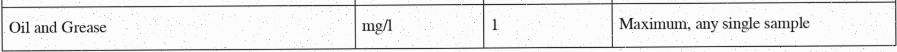
VOL-II:T2-4/OilGrease (page 3)
Parameter
Oil and Grease
Unit
mg/l
Limit
1
Basis of assessment
Maximum, any single sample
VOL-II:T2-4/note1
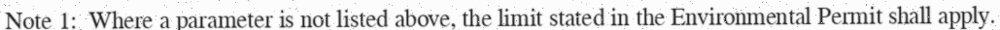
VOL-II:T2-4/note1 (page 3)
Note 1: Where a parameter is not listed above, the limit stated in the Environmental Permit shall apply.
Note 1 is the last line of the image and touches its bottom edge; the image may be cropped. The page continues with 'End of reproduction.' in the text layer, but whether a further note was cut off cannot be established from the pack.
VOL-IV-p6-r1: VOL-IV page 6 — reading approved
Approved by Ahmad on 2026-10-03 for review subject f433c2ca4e562679 (this reading and its evidence, exactly as shown here). No decision is needed unless the reading changes: any change makes it pending again, and tenderpack approve then shows the differences before an approval can be extended. The approval covers the transcription only.
Confirmation record:
worklog/2026-10-03_session-08_prompt.md, section 2 ('Record my source-reading confirmations'): the owner's written confirmation of 3 Oct 2026, received about 19:30 UTC; recorded by the assistant (Claude Code) on that instruction. The confirmation was made on the reading as shown in the session 07 review packets (reading file unchanged since commit 1997ef8)
Confirms:
Confirms the visible Arabic text and the displayed translations of the Form 4-C reading, including the headings, declarations, fields and footer.
Settled by the reviewer:
Declaration 5 (خامساً) refers to Volume I clause 4.2 (البند ٤-٢): the reviewer settles the uncertain left glyph of the clause numeral as ٢; the alternative recorded in the reading (٤-٣, VOL-I 4.3) is set aside by the reviewer
Left open:
the exact placement of diacritics (tanween on the ordinal words and كاملاً, hamza forms) stays uncertain, as recorded in the reading
'exclusion of the proposal' (استبعاد العرض, declaration 4) is not automatically equivalent to every other consequence category of the pack (rejection, disqualification, non-responsiveness); how it maps stays for a person to decide
Does not cover:
changed or unseen content: any later change to the reading, its uncertainties or its evidence makes it pending again; differences are shown before any approval is extended
the register's interpretations of this content (A1 rows stay proposed until decided row by row)
amendment operations
bidder compliance
Points the reading itself records as uncertain (kept as recorded):
Diacritics (tanween on أولاً, ثانياً, ثالثاً, رابعاً, خامساً, كاملاً; hamza forms) were checked on native pixels; at reduced zoom they disappear, so review the native crops, not a scaled view.
Where printed tanween sits relative to the final alef is not visible; it is stored after the alef. Matching text removes tashkeel, so this does not affect matching.
Blank fill-in lines under each field label are rule bands (structure), not text.
`decl4`: translation of استبعاد العرض as 'exclusion of the proposal': the English text of the pack never uses 'exclusion'; how it maps to the pack's rejection / disqualification / non-responsiveness categories is for a person to decide
`decl5` numeral `٤-٢`: Order is settled: the crop shows the hyphenated pair left to right as [digit]-[٤], which is what logical 4-x renders as. Identity of the left digit is not settled by machine: shape (chamfer) comparison favours ٢ over ٣ at three thresholds, a template-overlap score favoured ٣, and the preparer's visual comparison favours ٢. Reviewer to read the crop. — settled by Ahmad 2026-10-03: Declaration 5 (خامساً) refers to Volume I clause 4.2 (البند ٤-٢): the reviewer settles the uncertain left glyph of the clause numeral as ٢; the alternative recorded in the reading (٤-٣, VOL-I 4.3) is set aside by the reviewer
Full packet for VOL-IV-p6-r1: every band, cell and numeral at native resolution beside its reading (Arabic shown right to left); the crops below are the same regions, one per unit. Scroll sideways in the packet: crops are kept at native size so diacritics and decimal points stay visible.
VOL-IV:F4-C/image
VOL-IV:F4-C/image (page 6)
Form 4-C (image, Arabic with English labels): Conflict of Interest and Debarment Declaration
VOL-IV:F4-C/image/hdr-en
VOL-IV:F4-C/image/hdr-en (page 6)
NORTHERN UTILITIES PROCUREMENT AUTHORITY
VOL-IV:F4-C/image/hdr-ar
VOL-IV:F4-C/image/hdr-ar (page 6)
الهيئة الشمالية للمشتريات المرفقية
translation (confirmed as displayed by Ahmad, 2026-10-03): Northern Utilities Procurement Authority
VOL-IV:F4-C/image/ref-en
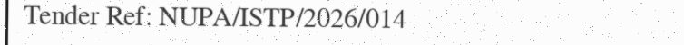
VOL-IV:F4-C/image/ref-en (page 6)
Tender Ref: NUPA/ISTP/2026/014
VOL-IV:F4-C/image/ref-ar
VOL-IV:F4-C/image/ref-ar (page 6)
مناقصة رقم: NUPA/ISTP/2026/014
translation (confirmed as displayed by Ahmad, 2026-10-03): Tender number: NUPA/ISTP/2026/014
VOL-IV:F4-C/image/form-en
VOL-IV:F4-C/image/form-en (page 6)
FORM 4-C
VOL-IV:F4-C/image/form-ar
VOL-IV:F4-C/image/form-ar (page 6)
النموذج ٤-ج
translation (confirmed as displayed by Ahmad, 2026-10-03): Form 4-C
VOL-IV:F4-C/image/title
VOL-IV:F4-C/image/title (page 6)
إقرار عدم تضارب المصالح وعدم الإدراج في قوائم الحظر
translation (confirmed as displayed by Ahmad, 2026-10-03): Declaration of no conflict of interest and of non-inclusion in debarment lists
نحن الموقعون أدناه، وبصفتنا ممثلين مفوضين عن العضو المذكور أدناه في ائتلاف مقدم العرض، نقر ونتعهد بما يلي:
translation (confirmed as displayed by Ahmad, 2026-10-03): We, the undersigned, in our capacity as authorised representatives of the member named below in the Bidder's consortium, declare and undertake the following:
VOL-IV:F4-C/image/decl1
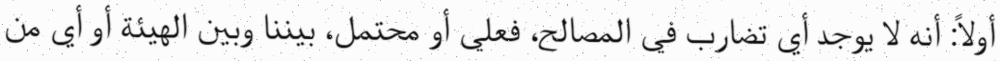
VOL-IV:F4-C/image/decl1 (page 6)
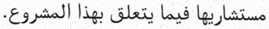
VOL-IV:F4-C/image/decl1 (page 6)
أولاً: أنه لا يوجد أي تضارب في المصالح، فعلي أو محتمل، بيننا وبين الهيئة أو أي من مستشاريها فيما يتعلق بهذا المشروع.
translation (confirmed as displayed by Ahmad, 2026-10-03): First: that there is no conflict of interest, actual or potential, between us and the Authority or any of its advisers in relation to this project.
VOL-IV:F4-C/image/decl2
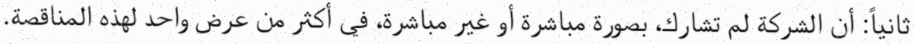
VOL-IV:F4-C/image/decl2 (page 6)
ثانياً: أن الشركة لم تشارك، بصورة مباشرة أو غير مباشرة، في أكثر من عرض واحد لهذه المناقصة.
translation (confirmed as displayed by Ahmad, 2026-10-03): Second: that the company has not participated, directly or indirectly, in more than one proposal for this tender.
VOL-IV:F4-C/image/decl3
VOL-IV:F4-C/image/decl3 (page 6)
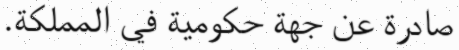
VOL-IV:F4-C/image/decl3 (page 6)
ثالثاً: أن الشركة غير مدرجة، ولم تكن مدرجة خلال الخمس سنوات السابقة، في أي قائمة حظر صادرة عن جهة حكومية في المملكة.
translation (confirmed as displayed by Ahmad, 2026-10-03): Third: that the company is not listed, and has not been listed during the previous five years, on any debarment list issued by a government body in the Kingdom.
رابعاً: أن جميع المعلومات المقدمة في هذا العرض صحيحة وكاملة، وندرك أن أي بيان غير صحيح يؤدي إلى استبعاد العرض.
translation (confirmed as displayed by Ahmad, 2026-10-03): Fourth: that all information submitted in this proposal is true and complete, and we acknowledge that any incorrect statement leads to the exclusion of the proposal.
translation of استبعاد العرض as 'exclusion of the proposal': the English text of the pack never uses 'exclusion'; how it maps to the pack's rejection / disqualification / non-responsiveness categories is for a person to decide
VOL-IV:F4-C/image/decl5
VOL-IV:F4-C/image/decl5 (page 6)
خامساً: نلتزم بقواعد الاتصال المنصوص عليها في البند ٤-٢ من المجلد الأول.
translation (confirmed as displayed by Ahmad, 2026-10-03): Fifth: we undertake to comply with the communication rules set out in Clause 4-2 of Volume I.
numeral '٤-٢': Order is settled: the crop shows the hyphenated pair left to right as [digit]-[٤], which is what logical 4-x renders as. Identity of the left digit is not settled by machine: shape (chamfer) comparison favours ٢ over ٣ at three thresholds, a template-overlap score favoured ٣, and the preparer's visual comparison favours ٢. Reviewer to read the crop. — settled by Ahmad 2026-10-03: Declaration 5 (خامساً) refers to Volume I clause 4.2 (البند ٤-٢): the reviewer settles the uncertain left glyph of the clause numeral as ٢; the alternative recorded in the reading (٤-٣, VOL-I 4.3) is set aside by the reviewer
VOL-IV:F4-C/image/field-member-en
VOL-IV:F4-C/image/field-member-en (page 6)
Name of consortium member
VOL-IV:F4-C/image/field-member-ar
VOL-IV:F4-C/image/field-member-ar (page 6)
اسم العضو في الائتلاف :
translation (confirmed as displayed by Ahmad, 2026-10-03): Name of the member of the consortium:
VOL-IV:F4-C/image/field-cr-en
VOL-IV:F4-C/image/field-cr-en (page 6)
Commercial registration number
VOL-IV:F4-C/image/field-cr-ar
VOL-IV:F4-C/image/field-cr-ar (page 6)
رقم السجل التجاري :
translation (confirmed as displayed by Ahmad, 2026-10-03): Commercial registration number:
VOL-IV:F4-C/image/field-signatory-en
VOL-IV:F4-C/image/field-signatory-en (page 6)
Name of authorised signatory
VOL-IV:F4-C/image/field-signatory-ar
VOL-IV:F4-C/image/field-signatory-ar (page 6)
اسم المفوض بالتوقيع :
translation (confirmed as displayed by Ahmad, 2026-10-03): Name of the person authorised to sign:
VOL-IV:F4-C/image/field-capacity-en
VOL-IV:F4-C/image/field-capacity-en (page 6)
Capacity
VOL-IV:F4-C/image/field-capacity-ar
VOL-IV:F4-C/image/field-capacity-ar (page 6)
الصفة :
translation (confirmed as displayed by Ahmad, 2026-10-03): Capacity:
VOL-IV:F4-C/image/field-date-en
VOL-IV:F4-C/image/field-date-en (page 6)
Date
VOL-IV:F4-C/image/field-date-ar
VOL-IV:F4-C/image/field-date-ar (page 6)
التاريخ :
translation (confirmed as displayed by Ahmad, 2026-10-03): Date:
VOL-IV:F4-C/image/field-signature-en
VOL-IV:F4-C/image/field-signature-en (page 6)
Signature and company seal
VOL-IV:F4-C/image/field-signature-ar
VOL-IV:F4-C/image/field-signature-ar (page 6)
التوقيع والختم :
translation (confirmed as displayed by Ahmad, 2026-10-03): Signature and seal:
ملاحظة: يجب تقديم هذا النموذج باللغة العربية عن كل عضو من أعضاء الائتلاف. عدم تقديمه كاملاً يجعل العرض غير مستجيب.
translation (confirmed as displayed by Ahmad, 2026-10-03): Note: this form must be submitted in Arabic for each member of the consortium. Failure to submit it complete renders the proposal non-responsive.
VOL-IV:F4-C/image/image-footer
VOL-IV:F4-C/image/image-footer (page 6)
FICTIONAL DOCUMENT - Lamar Holding internal assessment pack - not a real tender.